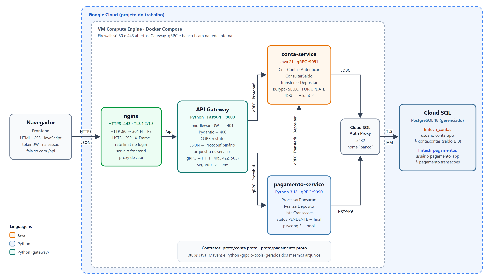
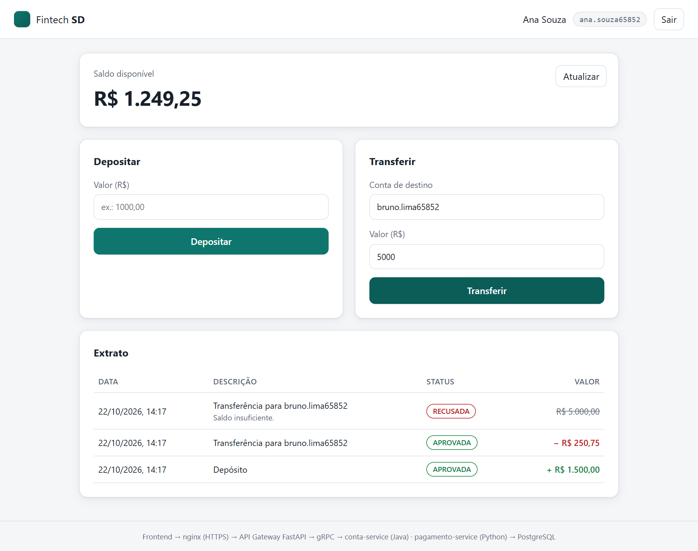
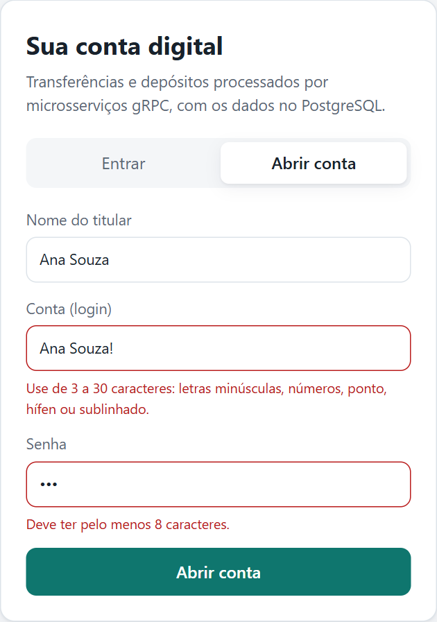

Sistemas Distribuídos · Trabalho 2
Evolução da fintech de pagamentos do Trabalho 1: frontend web, API Gateway FastAPI com JWT, dois microsserviços gRPC em linguagens diferentes (Java e Python) e PostgreSQL 18 no Cloud SQL.
Equipe: Henry Engels de Aguiar · Paulo Francisco Oliveira Teles · Matheus Santana de Moura
Código: github.com/henryengels/Trabalho2-sd
A lógica de negócio da fintech foi mantida; a infraestrutura distribuída ao redor dela foi refeita.
HashMap em memória (perdidos ao reiniciar)synchronized no processoSELECT … FOR UPDATE.env, implantação com Docker Compose na GCP
Somente o nginx é exposto. O restante se comunica pela rede interna do Docker Compose.
| Componente | Tecnologia | Porta | Responsabilidade |
|---|---|---|---|
| Frontend | HTML, CSS, JavaScript | — | Login, cadastro, saldo, depósito, transferência e extrato; chama apenas /api |
| nginx | nginx 1.27 | 80 / 443 | HTTPS, redirecionamento 80→443, cabeçalhos de segurança, rate limit, proxy para o gateway |
| API Gateway | Python · FastAPI · PyJWT · grpc.aio | 8000 | Middleware JWT, validação Pydantic, CORS, tradução JSON ↔ Protobuf e orquestração |
| conta-service | Java 21 · grpc-java · JDBC · HikariCP · BCrypt | 9091 | Contas e credenciais; único serviço que altera saldos |
| pagamento-service | Python 3.12 · grpcio · psycopg 3 | 9090 | Registra cada transação, delega ao conta-service e fornece o extrato |
| Cloud SQL | PostgreSQL 18 + Cloud SQL Auth Proxy | 5432 | Bancos fintech_contas e fintech_pagamentos, um por serviço; TLS com autorização IAM |
JSON na borda, Protobuf binário entre os serviços, transação SQL no banco.
Os stubs Java (Maven + protoc) e Python (grpcio-tools) são gerados dos mesmos arquivos em proto/.
// proto/conta.proto — implementado em Java service ContaService { rpc CriarConta(CriarContaRequest) returns (CriarContaResponse); rpc Autenticar(AutenticarRequest) returns (AutenticarResponse); rpc ConsultarSaldo(ConsultarSaldoRequest) returns (...); rpc Transferir(TransferirRequest) returns (TransferirResponse); rpc Depositar(DepositarRequest) returns (DepositarResponse); } message TransferirRequest { string conta_origem = 1; string conta_destino = 2; int64 valor_centavos = 3; // dinheiro em centavos }
// proto/pagamento.proto — implementado em Python service PagamentoService { rpc ProcessarTransacao(ProcessarTransacaoRequest) returns (...); rpc RealizarDeposito(RealizarDepositoRequest) returns (...); rpc ListarTransacoes(ListarTransacoesRequest) returns (...); }
# pagamento-service/pagamento/cliente_contas.py request = conta_pb2.TransferirRequest( conta_origem=origem, conta_destino=destino, valor_centavos=valor) return self._stub.Transferir(request, timeout=5)
Os serviços usam os códigos gRPC, e o gateway os converte:
INVALID_ARGUMENT→400 · UNAUTHENTICATED→401 · ALREADY_EXISTS→409 · UNAVAILABLE/DEADLINE_EXCEEDED→503
Recebe JSON, autentica, valida, serializa em Protobuf e despacha por gRPC.
| Rota | JWT | Serviço gRPC | Sucesso |
|---|---|---|---|
POST /api/auth/registro | — | CriarConta | 201 |
POST /api/auth/login | — | Autenticar → JWT | 200 |
GET /api/contas/me | ✔ | ConsultarSaldo | 200 |
GET /api/contas/me/extrato | ✔ | ConsultarSaldo ∥ ListarTransacoes | 200 |
POST /api/transacoes/deposito | ✔ | RealizarDeposito | 201 |
POST /api/transacoes/transferencia | ✔ | ProcessarTransacao | 201 |
400 JSON malformado, campo ausente, formato ou valor inválido, campo extra
401 sem token, token inválido ou expirado (barrado no middleware)
409 conta já cadastrada · 422 saldo insuficiente
503 microsserviço sem resposta
POST /api/transacoes/deposito {"valor": 10.555} → 400 Bad Request {"detail": "Dados inválidos.", "erros": [{"campo": "valor", "mensagem": "Use no máximo 2 casas decimais."}]}
Defesa em camadas: borda, gateway, serviços e banco.
nginx com TLS 1.2/1.3, 80→443, HSTS, CSP, X-Frame-Options, rate limit no login, corpo limitado a 16 KB.
Emitido no login (HS256, emissor e expiração obrigatórios). Middleware valida o Authorization: Bearer em toda rota protegida → 401.
A conta de origem vem do token. Enviar conta_origem no corpo é recusado (400): ninguém movimenta a conta de outro.
Campos obrigatórios, padrões, limites, até 2 casas decimais, extra="forbid". Os serviços revalidam a entrada.
CORS só para as origens do .env. Segredos (JWT_SEGREDO e senhas do banco) no .env, fora do Git e das imagens.
Senhas com BCrypt, SQL parametrizado, um usuário por serviço sem acesso ao banco do outro, Cloud SQL via Auth Proxy (TLS + IAM), contêineres sem root.
Relacional e ACID: débito e crédito acontecem juntos ou não acontecem.
| Banco · usuário | Serviço | Tabela |
|---|---|---|
fintech_contasconta_app | conta-service | conta.contas: titular, hash BCrypt, saldo CHECK (≥ 0) |
fintech_pagamentospagamento_app | pagamento-service | pagamento.transacoes: UUID, tipo, origem, destino, valor, status |
preparar-bancoPENDENTE e atualizada após o gRPC-- conta-service: transferência atômica SELECT id, saldo_centavos FROM conta.contas WHERE id IN (?, ?) ORDER BY id FOR UPDATE; -- valida existência e saldo UPDATE conta.contas SET saldo_centavos = saldo_centavos - ? ... UPDATE conta.contas SET saldo_centavos = saldo_centavos + ? ... COMMIT;
20 transferências simultâneas de R$ 100,00 com saldo de R$ 849,50:
8 aprovadas · 12 recusadas · soma dos saldos inalterada
Erros de validação (400) aparecem em cada campo; transações recusadas (422) ficam no extrato.


Mesmo docker-compose.yml nos dois ambientes; muda apenas o perfil do banco no .env.
fintech_contas e fintech_pagamentosCOMPOSE_PROFILES=gcp)preparar-bancotcp:80,443gcloud em docs/gcp.mdbash scripts/testar-api.sh https://IP
22 verificações, 0 falhas
https://github.com/henryengels/Trabalho2-sd
frontend/ e nginx/
api-gateway/ (FastAPI)
proto/conta.protoproto/pagamento.proto
conta-service/ (Java 21)
pagamento-service/ (Python)
docker compose up -d --build
guias em docs/